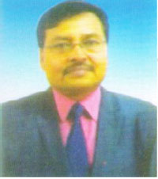

On 13th September 1954 to meet the growing need of education especially higher education facilities in then Shahabad district (after independence) Maharaja Bahadur Ram Ran Vijay Prasad Singh College (M.B.R.R.V.Pd.SINGH COLLEGE), popularly known as Maharaja College, Ara (premier and one of the oldest co-educational institutions of south-west Bihar) was established. The college becomes constituent unit of Magadh University, Bodh Gaya, Bihar on 1st February 1976. Later on, Veer Kunwar Singh University was formed after the bifurcation of Magadh University in October 1992 with headquarters at Ara. The college/university is recognized under the 2(f) and 12(b) of the UGC regulation .It is quite evident that the Maharaja College is much older than the present Veer Kunwar Singh University Ara. The college is situated in the heart of Ara town (south of Ramna Maidan, Pin Code--802301) in Bhojpur district.
The college is named and established after a great Philanthropist and Maharaja of Dumraon Estate Hon’ble Maharaja Bahadur Ram Ran Vijay Prasad Singh by his son Hon’ble Maharaja Shri KAMAL SINGH JI on 25 bighas of land .The land was historically known as JUDGE SAHEB KI KOTHI. ARA HOUSE -A national monument in the campus of Maharaja College is linked to bravery of the first war of Indian independence. There was a tunnel link between Ara House to Jagdishpur fort of Babu Kunwar Singh JI. A tunnel link is also between Ara House and Judge Saheb Ki Kothi. One can observed that historical well i.e. the entry point of that tunnel even today. Maharaja College is feeling proud to conserve this historical site. It was the bravery and sacrifice of Veer Kunwar Singh ji that this JANPAD was declared independent on 23th April 1858 from the British rule. To commemorate this occasion Bihar Government every year celebrates 23th April as VIJAYOTSAV (Victory Day). ARA HOUSE - located in the campus of Maharaja College has long served as Veer Kunwar Singh Museum and has given reshape under the supervision of Archeological Survey of India. Maharaja College along with Shahabad region has proud on its historical site. Discovery Chanel has already made a short film (documentary) on this historical site. As Ara is the land of historical and cultural importance, General Cunningham considers it as Aramnagar. The name of Aramnagar preserved in the modern Jain inscription at Masar, meaning the city of repose or monastery city, as Aram (repose) was special term used by the Buddhists to designate a monastery. At present, Jains have as many as 50 shrines in the town - highest number of Jain temples in any single city of India.
Along with the glory of history and its culture, Maharaja College ensures publicity and transparency in admission and education through online process. It is very particular to cater the needs of differently abled students. The college is promotive to gender sensitiveness, inclusive education and environment friendly ethos among students. Most of the students are from downtown and from Downtrodden. The College strictly follows the reservation policy of central and state government and strictly observes and follows the UGC norms and guidelines in imparting education. It has several thousands of students on its roll. After considering its academic achievements at different level, the college enhanced upon a new venture in the direction of vocational / job-oriented courses. The college has started vocational courses in Sericulture (2001), BCA (2004), Biotechnology (2004) and Industrial Microbiology (2007).
The faculty members of this college and some visiting faculties are capable and efficient at handling the teaching/learning process. Remedial classes are functioning in the college as per UGC norms. The college has several thousands of students on its roll. It is worth mentioning that our BCA department is working as Online Examinations centre. Units of NCC and NSS are running in the college with the objectives of patriotism, social service and development of fraternity among students. The college proudly announcing that one of our NSS students has received PRESIDENT AWARD for his outstanding performance recently.
A study centre of Nalanda Open University is running efficiently in the college campus to impart education (about 105 traditional and vocational courses) through distance mode to fulfill the need and interest of the society and students concerned. The number of students enrolled to this centre makes it one of the largest (among 10 largest centres) enrolled study centres of Nalanda Open University among Bihar and Jharkhand states.
The college is trying to organize the teaching-learning process more and more student centric. Its aims at nurturing critical thinking, creativity and scientific temper among students to transform them as lifelong learners and innovators. Departments have been equipped with modern facilities to cope with emerging needs of blended learning. The digitization of library is going on. Teachers of the college are highly qualified and research oriented. The college offers Post-Graduate level education in Arts, Science & in Humanities while Graduate level education in Arts, Science, Humanities, Commerce & in Vocational courses.
The college has introduced a number of undergraduate, postgraduate and Ph.D. programs in different faculties, such as Humanities, Social Sciences and in Science. Novel teaching techniques are adopted in different departments. Seminars and Symposia are organized at departmental levels. Some minor projects under UGC scheme have also been completed by our learned scholar teachers. Popular lectures /guest lectures are arranged to enrich the faculty as well as students in order to achieve excellence in higher education. Not only this, our sincere teachers are also taking interest in participating seminars, symposia, conferences and workshops to enhance their teaching/learning efficiency.
During its long history, some noted personalities are worth mentioning who served the college as its Principals like-DR. GORKH NATH SINGH, DR. J. P. SINGH, DR. BHAGIRATH SINGH, DR. SURENDRA NARAYAN SINGH & DR. GANDHI JI ROY & Prof. (DR.) RAJENDRA PRASAD SINGH who upgrade and updated the sustainable educational environment of the campus. Our present principal Prof. (DR.) Narendra Singh is an educationist with par excellence & has got awards for his contribution in the field of research in Physics. Due to these visionaries the college has separate buildings structure for administrative works, academic works, library works, common rooms (for boys and girls) and for gymnasium. We have 21 Classrooms, 01 Seminar hall,14 laboratories, 01 beautiful botanical garden, 01 rich library with reading room, 01 health care centre, 01 computer lab , 01 large field for outdoor games and an environmental friendly lush green campus. We have a girl hostel (under construction) and 12 residential quarters for teachers and non- teaching staffs.
In the field of governance, leadership and management we have got a very dynamic and popular Principal Prof. (DR.) Narendra Singh. He meets with all the head of the different departments at regular intervals and monitors the internal evaluation of teaching/learning process and on other issues for taking conducive measures for acquiring robust health of this educational institution.